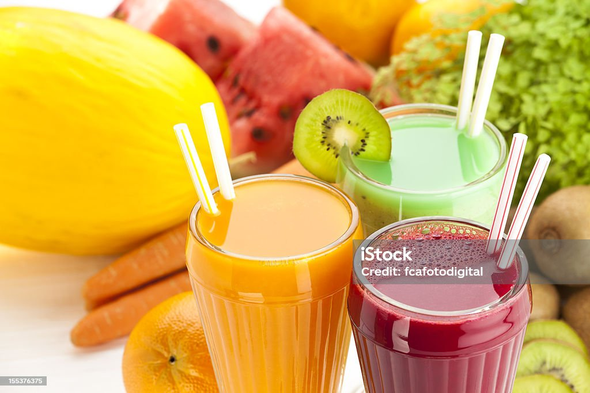
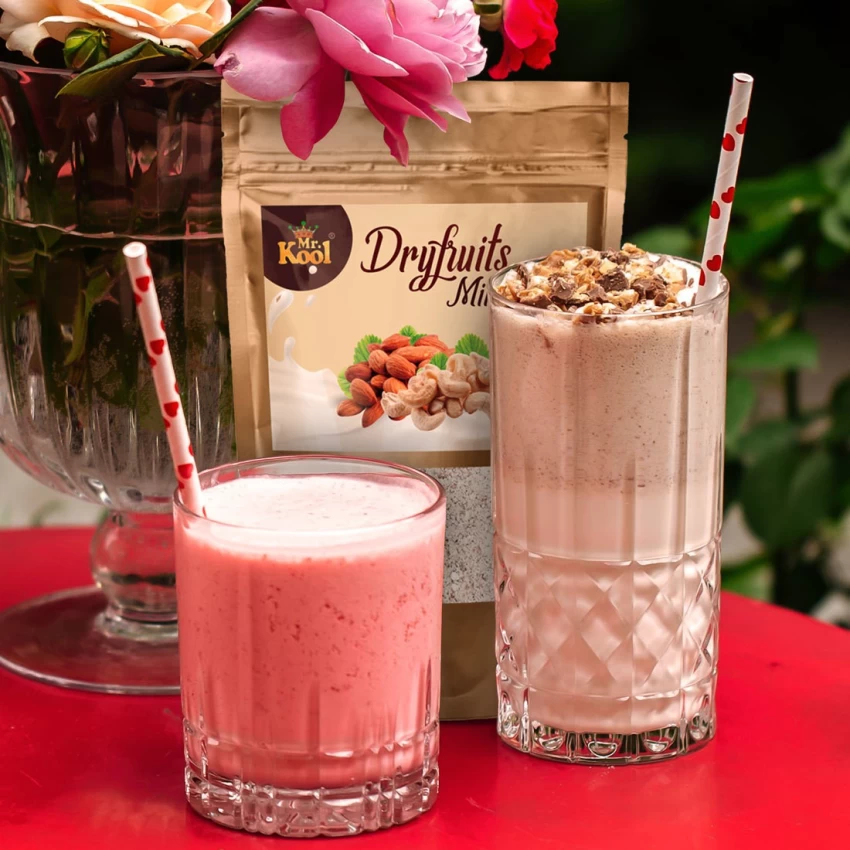

Explore the Cool drinks

Juice is a drink made from the extraction or pressing of the natural liquid contained in fruit and vegetables. It can also refer to liquids that are flavored with concentrate or other biological food sources, such as meat or seafood, such as clam juice. Juice is commonly consumed as a beverage or used as an ingredient or flavoring in foods or other beverages, such as smoothies. Juice emerged as a popular beverage choice after the development of pasteurization methods enabled its preservation without using fermentation (which is used in wine production).[1] The largest fruit juice consumers are New Zealand (nearly a cup, or 8 ounces, each day) and Colombia (more than three quarters of a cup each day). Fruit juice consumption on average increases with a country's income level.
The word "juice" comes from Old French in about 1300; it developed from the Old French words "jus, juis, jouis", which mean "liquid obtained by boiling herbs".[3] The Old French jus "juice, sap, liquid" (13c.)...[came] from Latin ius [which means] "broth, sauce, juice, soup," from PIE root *yeue- "to blend, mix food" (cognates: Sanskrit yus- "broth," Greek zyme "a leaven", Old Church Slavonic jucha "broth, soup," Russian: уха "ukha", Lithuanian: juse "fish soup").[3] The use of the word "juice" to mean "the watery part of fruits or vegetables" was first recorded in the early 14th century.[3] Since the 19th century, the term "juice" has also been used in a figurative sense (e.g., to mean alcohol or electricity). Today, "au jus" refers to meat served along with its own juice, commonly as a gravy.

Dry fruits are fruits that have been dehydrated, either naturally or through methods such as sun drying or using dehydrators. These processes remove most of the moisture content from the fruit, resulting in a concentrated and nutrient-dense product. Nuts and dry fruits retain much of the nutritional value found in fresh fruits, making them highly beneficial to include in one’s diet.
Dry fruits are rich in carbohydrates and dietary fibre. As a result, they are one of the best snacking options. The dietary fibre keeps you satiated for long and controls the urge to eat between meals. As a result, your calorie consumption reduces . At the same time, dietary fiber is good for a healthy gut and improves bowel movements.
Limited calorie intake and a healthy gut are two fundamentals of weight loss. Thus, dry fruits rich in dietary fibre help lose weight. As per studies, the fat content in some nuts takes time to absorb in your body. Hence, it prevents weight gain.
Gut health improvement is another benefit of the dietary fibres in dry fruits. Dry fruits are rich in dietary fibre, both soluble and insoluble.these dietary fiber help in adding bulk to stool. As a result, dry fruits help maintain a healthy bowel movement. A recent study suggests that dry fruits like prunes contain bifidobacteria, which help improve digestive health.
Have you ever had the ”fluid of life”? You might be wondering what ”fluid of life” is.1 It is nothing but tender coconut water. In Philippines the coconut tree is also referred to as the ”tree of life”. Now this might refresh your memory and take you on a trip down the memory lane; it’s probably a scene of a beach and a green coconut in your hand. Tender coconut water seems to be the perfect comrade for a summer beach trip. Not only is it refreshing, it might have many health benefits too!
The coconut palm tree, also known as Cocos nucifera, is the most extensively grown palm tree over the world. It is mainly grown in tropical countries. Indonesia is the largest coconut producer in the world. 1,2
The clear delicious liquid found inside the coconut is known as coconut water. The water of a tender coconut is nothing but the endosperm of the coconut and it is one of the most nutritious beverages available to us. This nutritious water is what matures and forms the flesh of the coconut over time. Tender coconut water is the liquid and not the milk of the coconut. The water content of the coconut depends on its age and the variety of coconut, but an average tender coconut of five to seven months age contains around 500-750 mL of refreshing coconut water! Read on to find out more about the various potential health benefits of tender coconut water.

A soft drink (see § Terminology for other names) is any water-based flavored drink, usually but not necessarily carbonated, and typically including added sweetener. Flavors used can be natural or artificial. The sweetener may be a sugar, high-fructose corn syrup, fruit juice, a sugar substitute (in the case of diet drinks), or some combination of these. Soft drinks may also contain caffeine, colorings, preservatives and other ingredients.
Soft drinks are called "soft" in contrast with "hard" alcoholic drinks. Small amounts of alcohol may be present in a soft drink, but the alcohol content must be less than 0.5% of the total volume of the drink in many countries and localities[1][2] if the drink is to be considered non-alcoholic.[3] Types of soft drinks include lemon-lime drinks, orange soda, cola, grape soda, ginger ale, and root beer.
Soft drinks may be served cold, over ice cubes, or at room temperature. They are available in many container formats, including cans, glass bottles, and plastic bottles. Containers come in a variety of sizes, ranging from small bottles to large multi-liter containers. Soft drinks are widely available at fast food restaurants, movie theaters, convenience stores, casual-dining restaurants, dedicated soda stores, vending machines, and bars from soda fountain machines